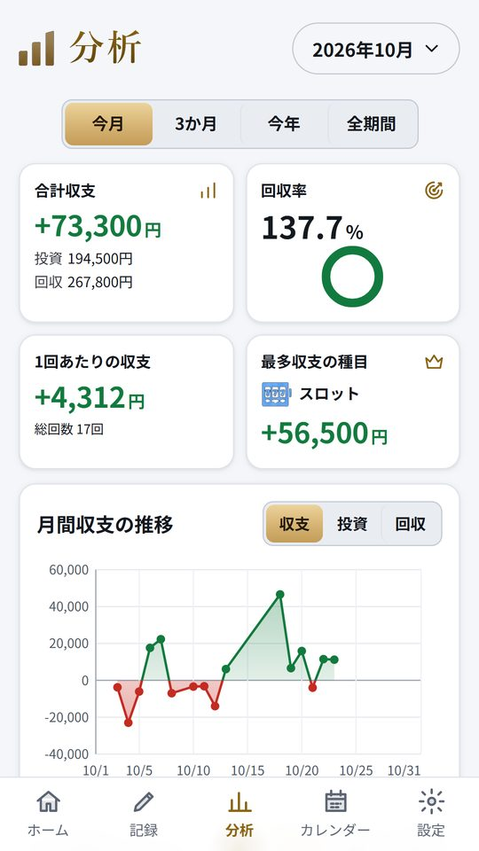

カチマケ › 回収率の出し方
回収率の出し方(パチスロ・競馬)
2026年10月25日
回収率は、使ったお金に対してどれだけ戻ってきたかを割合で表した数字です。式にするとこうなります。
回収率(%)= 戻った額の合計 ÷ 使った額の合計 × 100
100%ならちょうど使った分だけ戻っていて、100%より上ならプラス、下ならマイナスです。たとえば1か月で 60,000円使って 48,000円戻ったなら、48,000 ÷ 60,000 × 100 で回収率は80%、収支は −12,000円になります。
式そのものは単純ですが、何を「使った額」と「戻った額」に入れるか、どの期間で区切るかで、出てくる数字はかなり変わります。パチスロと競馬では気をつけるところも少し違うので、分けて書いておきます。
合計どうしで割る。平均はしない
最初に、どちらにも共通する落とし穴を一つ。1日ずつの回収率を出して、それを平均してはいけません。
1日目: 1,000円使って 3,000円戻った → 300%
2日目: 20,000円使って 10,000円戻った → 50%
2日の平均: (300 + 50)÷ 2 = 175%
合計で割る: 13,000 ÷ 21,000 × 100 = 約62%
平均だと175%でプラスに見えますが、実際には 8,000円のマイナスです。少ない額で当たった日の率が、平均を大きく引っぱってしまいます。回収率は、期間中の戻った額の合計を、使った額の合計で割って出します。
パチスロの回収率
パチスロでは、使った額にその日に入れた現金を、戻った額に交換して受け取った額を入れます。再プレイで貯メダルを使った日は、その枚数を貸し出しの値段で円に直して使った額に足し、出たメダルを貯めた日はその分を戻った額に足します。ここを入れないと、再プレイの日だけ使った額が小さくなり、回収率が実際より高く出ます。入れ方は収支表のつけ方にもう少しくわしく書いています。
よく混同されるのが、機種の紹介に出てくる「機械割(出玉率)」です。機械割は、入れたメダルの枚数に対して出てきたメダルの枚数の割合で、台の性能をあらわす数字です。一方の回収率は、財布から出たお金と戻ったお金の割合です。交換するときの率が貸し出しの値段と違う店では、メダルの枚数が同じでも戻る金額は減りますし、閉店まで打てずにやめた日や、途中で台を移った日も回収率に入ってきます。なので、機械割が100%を超える設定の台を打っていたとしても、自分の回収率がその通りになるとは限りません。自分の遊び方の結果を知りたいなら、見るべきは回収率のほうです。
パチスロの1日の結果は振れ幅が大きいので、回収率は少なくとも月単位、できれば数か月分をまとめて見ると、傾向がつかみやすくなります。店ごと、機種ごとに分けて出すと、どこでお金が出ていっているのかも見えてきます。
競馬の回収率
競馬では、使った額が馬券の購入額、戻った額が払戻金です。外れた馬券の購入額も必ず入れます。当たったレースだけで計算すると、回収率はいくらでも高く見えてしまいます。
競馬で回収率を見るときは、券種ごとに分けるのがおすすめです。JRA の馬券は、売上のうち払い戻しに回る割合(払戻率)が券種ごとに決まっていて、単勝と複勝が80%、枠連・馬連・ワイドが77.5%、馬単と3連複が75%、3連単が72.5%、WIN5 が70%です。長く買い続けたときの回収率は、この数字がひとつの目安になります。自分の券種ごとの回収率をこの払戻率と並べてみると、どの買い方で多く使っているかがはっきりします。
例: 今年、3連複に 50,000円使って払戻 36,000円 → 72%
同じく単勝に 30,000円使って払戻 25,500円 → 85%
もう一つ、競馬の回収率は1回の大きな払戻で大きく動きます。3連単が1回当たっただけで、その月の回収率が何倍にも跳ねることがあります。月ごとの数字だけで判断せず、年間で見ること、そして当たった回数(的中率)と回収率を分けて見ることが大切です。的中率が高くても回収率が低い、という形はよくあります。
競輪・ボートレース・オートレースも計算のしかたは同じです。払戻率は競技や券種で違うので、競馬・競輪・ボートの払戻率のページにまとめています。
数字の使い道
回収率は、当てるための数字ではなく、自分の遊び方を確かめるための数字だと思います。どの店、どの券種、どの曜日に使った額が集まっているかが分かれば、続けるかどうかを自分で決めやすくなります。月の負けの上限と一緒に見ておくと、使いすぎにも早めに気づけます。
カチマケは、使った額と戻った額を入れると、月の収支と回収率を自動で出す収支アプリです。合計どうしで割った回収率を、今月・3か月・今年・全期間で切り替えて見られます。競馬・競輪・ボート・オートは券種も残せて、券種ごと・店ごと・機種ごとの収支が並びます。遊んだ時間を入れておくと時給も出ます。記録はスマホの中だけに保存します。

Android 版です。18歳以上の方向けのアプリで、予想や買い方の情報は載っていません。賭け事そのものも提供しません。パチンコ・パチスロは18歳未満、公営競技の投票は20歳未満の方は法律で禁止されています。
https://play.google.com/store/apps/details?id=jp.kachimake.app